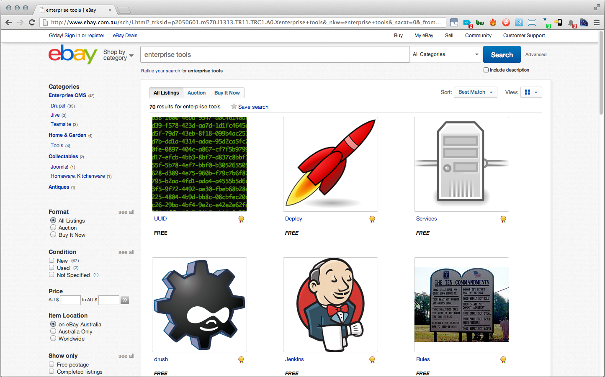
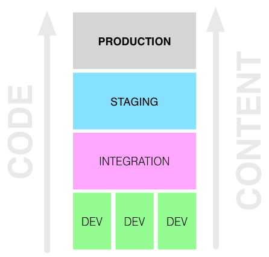
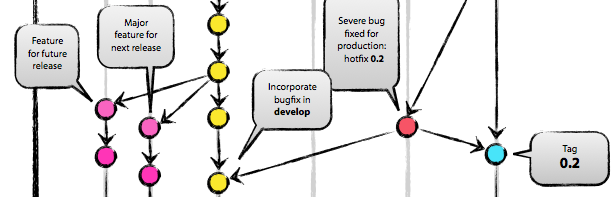

We gitflow,
Why not "DevFlow"
Presented by Josh Beauregard
Forked from wf tools presentation by & Tim Holt.
Disclaimer
This presentation outlines a general technology direction. Knectar has yet to full adopt all the work flows presented here.
This was inspired by hms miltisite and rbad development, and is a living idea that can be changed. its also quite holy at times.
There are a few storeis to tell.
The story of Drupal
Once upon a time,
a little boy called Dries lived in Belgium.

While at uni Dries had a little baby called Drupal.

Drupal started to grow.

Like many kids Drupal started doing odd jobs.
While at high school Drupal got a part time job.
Eventually Drupal made it to uni.
After graduating Drupal got a job. It Sold Whiskey
One day a big corporation rang and offered Drupal a job.
Drupal accepted.
On the first day Drupal turned up for work,
and it was clear Drupal didn't quite fit in.

Drupal was used to doing everything on production.
One day the boss called and told Drupal to go buy some new tools.
Drupal started searching for new tools.
The next day Drupal's new tools arrived.

Drupal's boss was impressed.

And they all deployed happily ever after.
What was in the toolbox that made Drupal's boss so happy?
Features
hook_update_N
Deploy Tools
drush
git
Custom Entities
These tools allowed Drupal to do things very differently.
When Drupal was younger databases were swapped
Downtime was mandatory
There was no easy to read log of all changes.
Drupal had difficulty looking at a single change on it's own.
Configureation and code changes couldn't be bundled together.
Deployment was an all or nothing event.
Deployments couldn't really be tested.
Different permissions and configuration per environment weren't possible.
This all made Drupal very sad.
Drupal decided to change how things were done.
Drupal discovered that arbitrary sets of changes could be bundled together in code (even database based configuration changes).
this eleiminated the need for dtabase swaps.
Napkins where made obsolete
Developers did not even have to use the risk making a mistake in prodction
Now Drupal can group code changes with current content changes.
The
End
Now for the tale of the developer
In the begginning of thier carrer teh developer just over wrote code and prayed that it worked
Eventually somthing went wrong
the developer searched and searched the hard dive the the file, the hours of hard work was gone
the developer learned some sort of version control
- Copying file and changing the name
- CVS
- Subversion
nothing ever quite sat right
- "IT was all liner
- They had to share have dsone work with the entire team just make a backup
It worked
but it was clunky
git was fast
git had flow
the developer played in the features sandbox all day and created master peices worht for the whole world to view.
Drupal gave each vhost it's own dedicated sandbox.

Drupal can preview content in context.
Drupal can push several branchs to the staging server,
but only push a single job up to production when it's ready.
Drupal tests deployments at every step along the way!
all without logging into production.
Drupal's cousin's name is "featureFooBar123".
Drupal makes sure featureFooBar123 is safe on an epic journey.
featureFooBar123 started off as nothing more than a twinkle in somebody's eye.
First, Drupal spins up a new dedicated drupal sandbox called featureFooBar123.dev.site.com.
Next, Drupal creates a featureFooBar123 git branch and checks it out on the sandbox.
Drupal then creates a featureFooBar123 deployment plan to track the content changes.
Drupal makes changes to content or code (or both) on the sandbox.
Now featureFooBar123 is big enough to move to the integration environment.
Drupal merges the featureFooBar123 git branch into the integration git branch and pushes it to the integration server.
Then Drupal triggers the featureFooBar123 deployment plan to be pushed to the integration server.
Drupal sits back and looks at the changes merged into the integration server...
...and decides featureFooBar123 is ready to move to the staging environment.
From there, the same merge/approval happens on staging before being pushed to production.
All of the jobs' statuses are tracked by Drupal.
Drupal can tell at a glance which jobs are in which environments, and which are ready for approval...
…all from a central management console.